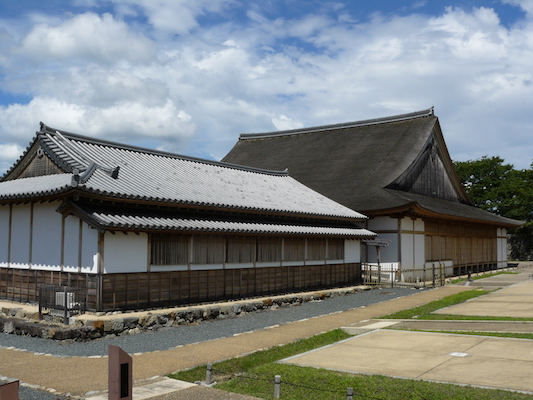
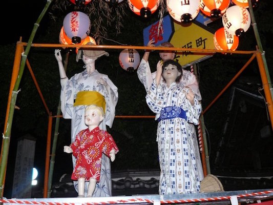
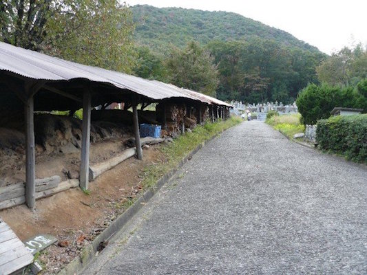
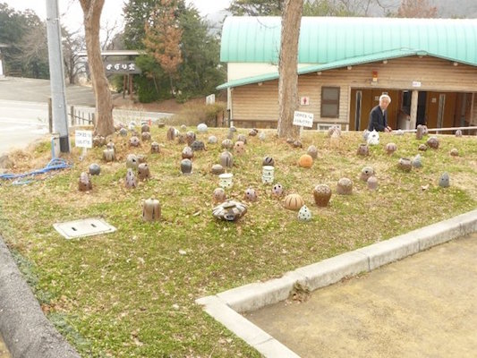
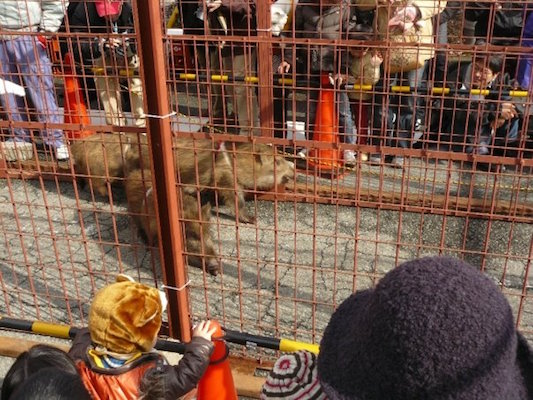
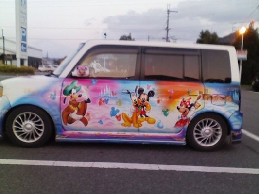
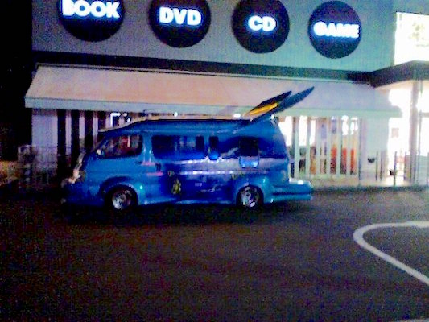
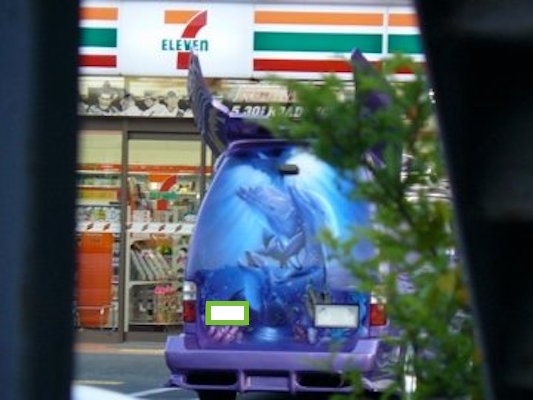

Known as one of the "Little Kyotos" of Japan or "Sassy Mama," Sasayama is home to several cultural treasures. Check them out below!
The ruins of Sasayama Castle
Situated on a hill in the center of the city, Sasayama Castle was originally built in 1609 and served as the rallying site for Japanese Shogun Tokugawa Ieyasu's blitz against a rebellion in nearby Osaka. Unfortunately, pretty much all of the castle has since burned down, with the final building succumbing to fire in 1944. The Ooshoin, or Grand Hall, was rebuilt in 2000.

The reconstructed Ooshoin, or Grand Hall, on a gorgeous day in Sasayama
Dekansho summer festival
Sasayama's biggest festival of the year takes place every August next to the castle. Thousands of people from all over Japan flock to Sasayama in the middle of summer to dance along to "Dekansho-bushi" a local traditional folk song. The festival, named after the philosophers Descartes, Kant and Schopenhauer, began more than 60 years ago and is incredibly popular among locals for the fireworks, the delicious food from the food stalls and the innocuous ear worm that won't ever leave your head.

Mannequins showing off Dekansho couture on the sidelines of the big summer festival
Tamba Tachikui-yaki pottery
Nestled among the hills of the southern part of the city, the Konda area of Sasayama is famous for its pottery. Tamba Tachikui-yaki is one of the six famous ceramic regions in Japan. The pottery is fired up in the "mountain-climbing kilns" that snake up the hillside.


One of the famous nobori-gama, or mountain-climbing kilns, in the Konda area in southern Sasayama (L) and the local pottery museum displaying samples out front (R)
Wild Boar Festival
Sasayama, being situated in the mountains of the countryside, is filled with wild boars that have come to represent the city. Every January, the city gathers near the castle and race baby wild boars to the delight of onlookers. Some light betting is done on the side, although the boars have been known to not finish the race.

Baby wild boars running for the finish line in a (controlled) race on the streets of Sasayama for the annual wild boar festival
Car Decoration
Some of the most creative car art can be seen in Sasayama where certain legends, like the batman van, are only spotted on the rarest of occasions. Others, like the Disney-wrapped k-car, are frequently seen in local parking lots.

The Disney K-Car of Sasasyama making an appearance in the parking lot of the Super Fresh Sato grocery store


The batman van, sometimes referred to as the dolphin van, shows up when you least expect it, so keep your camera ready